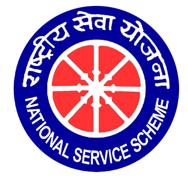

What is NSS?
NSS creates socially responsible graduates by connecting student learning with community service. It encourages volunteers to understand society, develop empathy, and contribute to national development.
Motto: "NOT ME BUT YOU"
NSS creates socially responsible graduates by connecting student learning with community service. It encourages volunteers to understand society, develop empathy, and contribute to national development.
Motto: "NOT ME BUT YOU"
Vision: Build youth leadership rooted in service, discipline, inclusion, and national integration.
Mission: Mobilize students for structured community work, awareness campaigns, environmental action, health support, and civic responsibility.

NSS was introduced as a Government of India youth service program to develop the personality of students through community service.

The first volunteer ideal is represented through service before self, discipline, public responsibility, and the NSS motto.
NSS was launched in India to involve students in constructive national service during Mahatma Gandhi's birth centenary year.
The scheme functions through the Ministry of Youth Affairs and Sports with universities and institutions across India.
SRGEC NSS works with the university NSS cell and district-level programme structures.
The SRGEC unit conducts service activities, special camps, national camp selections, and leadership programs for students.
Understand community needs, develop leadership, practice democratic values, encourage teamwork, and serve with humility.
The NSS symbol is inspired by the Konark wheel, reminding volunteers of movement, continuity, discipline, and social progress.
SRGEC NSS is connected to college administration, the university NSS cell, and Government of India youth service initiatives.